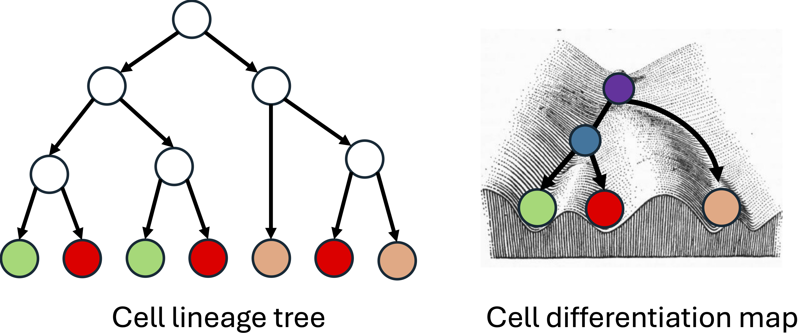
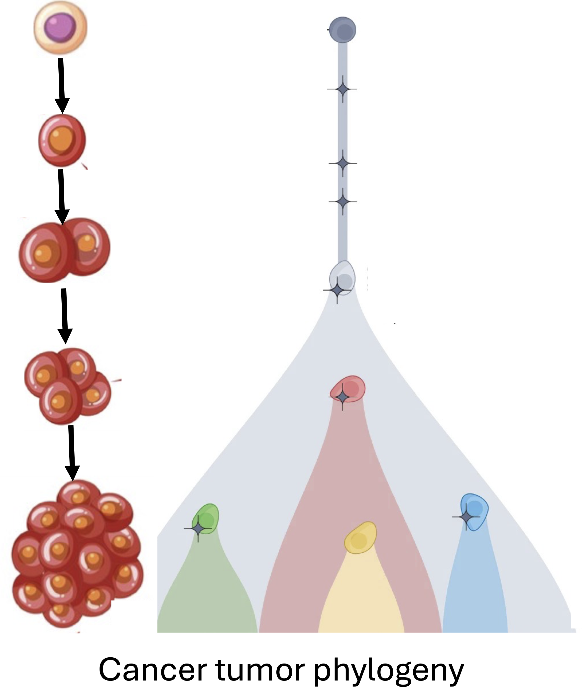
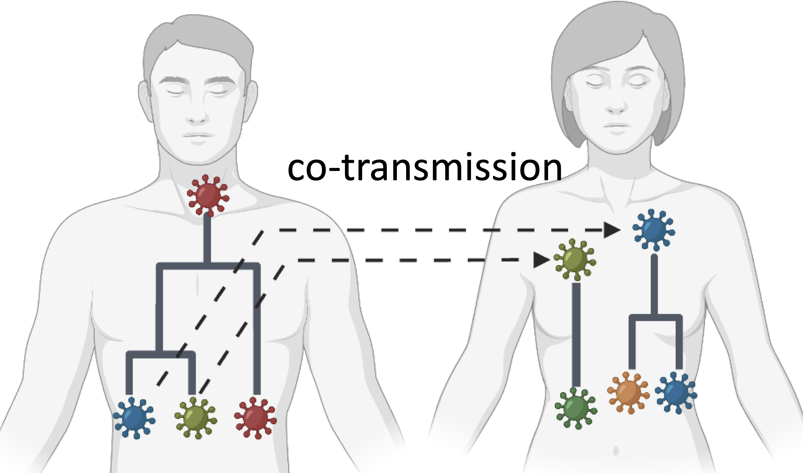

|
Research Directions
Cell lineage and differentiation
|
 |
A multicellular organism is the result of a complex process involving division and differentiation of cells.
A fundamental goal of developmental biology is to understand (1) the ancestral relationship between the cells, i.e. the cell lineage tree, and (2) all of the intermediate cell types and cell type transitions, i.e. the cell differentiation map, that occur during development.
Recent advances in high-throughput lineage tracing technologies hold the key to uncovering the lineage tree and differentiation map for complex organisms.
Lineage tracing technologies employ genome editing tools, such as CRISPR-Cas9 editing, in conjunction with single-cell sequencing methods, such as scRNA-seq, to simultaneously measure the lineage and state of individual cells in complex organisms such as zebrafish and mouse.
However, inference of the cell lineage tree and the cell differentiation map from lineage tracing data remains challenging because (i) genome editing tools often introduce the same mutations in cells with different lineages (homoplasy) making it hard to accurately trace the ancestry of cells, (ii) lineage tracers do not measure the cell type of the ancestral cells, many of which may have progenitor cell types not observed in the extant cells of the organism and (iii) lineage tracing data has errors and missing information (dropout).
We develop specialized algorithms for accurate lineage tree inferene and cell differentiation mapping from lineage tracing data.
|
Palash Sashittal, Viola Chen, Amey Pasarkar, Benjamin Raphael, Joint inference of cell lineage and mitochondrial evolution from single-cell sequencing data, Bioinformatics, 2024.
Palash Sashittal*, Henri Schmidt*, Michelle Chan and Benjamin Raphael, Startle: a star homoplasy approach for CRISPR-Cas9 lineage tracing, Cell Systems, 2023.
Cancer genome evolution
|
 |
Cancer is an evolutionary process in which somatic mutations across all genomic scales accumulate in a population of cells.
This process results in a heterogeneous tumor with subpopulations of cells, called clones, with distinct genomes.
Characterization of this intra-tumor heterogeneity and reconstruction of the evolutionary history of the tumor, known as the tumor phylogeny, is crucial for understanding cancer progression and developing effective therapies for treatment.
Single-cell DNA sequencing (scDNA-seq) has emerged as a powerful tool for achieving this, enabling parallel genomic sequencing of thousands of individual cells from a tumor.
However, current scDNA-seq technologies are error-prone and produce data with missing information.
As such, there is a need for robust and scalable computational methods to characterize the heterogeneity within cancer tumors from scDNA-seq data.
We develop comprehensive models of cancer evolution that incorporate prevoiusly neglected biological processes and introduce novel problem statements to analyze single-cell sequencing data in innovative ways.
Palash Sashittal, Hoachen Zhang, Christine Iacobuzio-Donahue and Benjamin Raphael, ConDoR: Tumor phylogeny inference with a copy-number constrained mutation loss model, Genome Biology, 2023.
Henri Schmidt, Palash Sashittal and Benjamin Raphael, A zero-agnostic model for copy number evolution in cancer, PLOS Computational Biology, 2023.
Palash Sashittal, Simone Zaccaria and Mohammed El-Kebir, Parsimonious clone tree integration in cancer, Algorithms and Molecular Biology, 2022.
Leah Weber*, Palash Sashittal*, and Mohammed El-Kebir, doubletD: detecting doublets in single-cell DNA sequencing data, Bioinformatics, 2021.
|
Infectious disease evolution and transmission
|
 |
During an outbreak, pathogens undergo evolutionary changes as they are transmitted from one host to another.
Pathogens, such as viruses or bacteria, accumulate genetic mutations or undergo genetic recombination during replication within a host's body.
Consequently, the host harbors multiple variants of the pathogen, which is known as within-host diversity.
Identifying and characterizing the diversity of pathogen variants is crucial for timely outbreak management and predicting the effectiveness of treatment for infected patients.
We work on problems such as quantifying the prevalence of variants of interest (VoIs) of SARS-CoV-2 in wastewater; deciphering the diversity of SARS-CoV-2 within and across patients; assembling coronavirus transcripts; and de novo identification of genes in coronavirus genomes.
Palash Sashittal, Chuanyi Zhang, Jian Peng and Mohammed El-Kebir, Jumper enables discontinuous transcript assembly in Coronaviruses, Nature Communications, 2021.
Chuanyi Zhang*, Palash Sashittal*, Michael Xiang, Yichi Zhang, Ayesha Kazi and Mohammed El-Kebir, Accurate identification of transcription regulatory sequences and genes in Coronaviruses, Molecular Biology and Evolution, 2022.
|
Chamtuet Oh*, Palash Sashittal*, Aijia Zhou, Leyi Wang, Mohammed El-Kebir and Thanh Nguyen, Design of SARS-CoV-2 variant-specific PCR assays considering regional and temporal characteristics, Applied and Environmental Microbiology, 2022.
Palash Sashittal and Mohammed El-Kebir, Sampling and summarizing transmission trees with multi-strain infections, Bioinformatics, 2020.
|